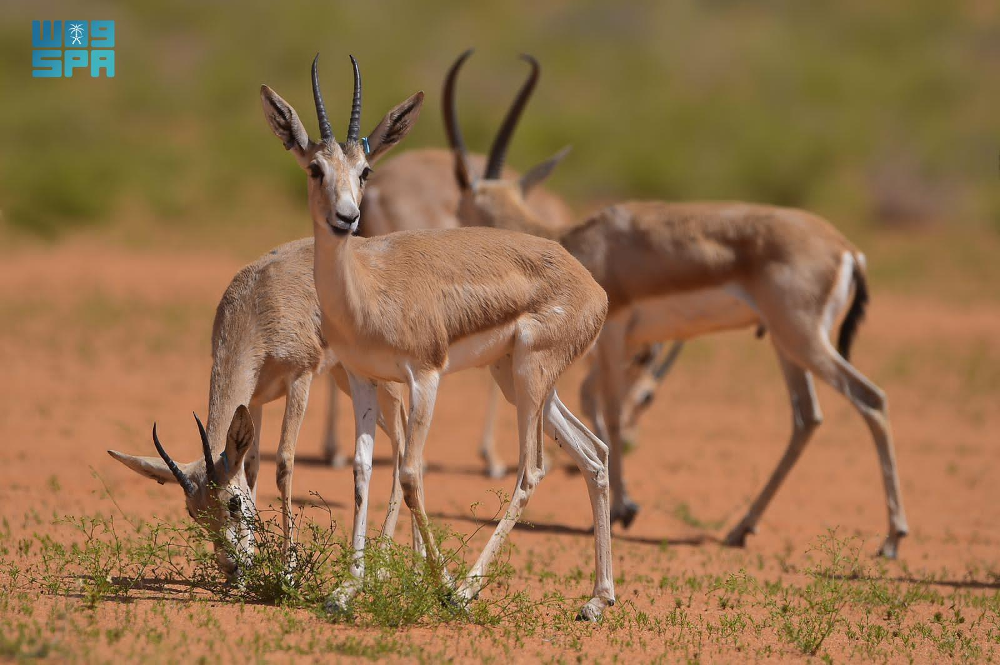
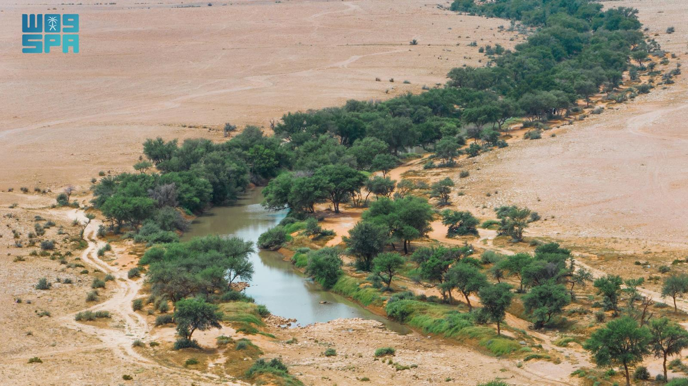

دشّنت هيئة تطوير محمية الملك عبدالعزيز الملكية النسخة الثانية من «موسم الطوقي» السياحي في 8 تشرين الأول 2026، على أن يستمر حتى نيسان 2027، ضمن جهود تطوير السياحة البيئية وحماية الموائل الطبيعية والحياة الفطرية في السعودية.
ويستفيد الموسم من تجربة نسخته الأولى التي استقبلت أكثر من 20 ألف زائر خلال 78 يومًا، مع توسيع الأنشطة والتجارب المرتبطة بالطبيعة والمغامرة والتراث، وتعزيز مشاركة المجتمع المحلي.
تسعة أنواع جديدة في سجلات المحمية
وكانت الهيئة قد أعلنت خلال الصيف الماضي عن إنجاز علمي مهم تمثل في توثيق تسعة أنواع من الطيور للمرة الأولى داخل نطاق المحمية، استنادًا إلى مسح ميداني امتد عامًا كاملًا، نُشرت نتائجه في دورية Check List العلمية المحكمة في حزيران 2026.
وأجرى المسح فريق بحثي بمشاركة مختصين من الهيئة وجامعة الملك سعود، وشمل أنواعًا من الطيور البرية والمائية والمهاجرة والشاردة عن مساراتها المعتادة.
وضمت الأنواع الموثقة الصقر الوكري، والبومة طويلة الأذن، والزرزور الوردي، والعصفور أصفر الحلق، والدُّرَّسة سوداء الرأس، والنورس رقيق المنقار، والزقزاق الأوراسي، والزقزاق مهمازي الجناح، والنحام الأكبر (الفلامنجو الكبير).

مصدر الصور: وكالة الأنباء السعودية (واس) / محمية الملك عبدالعزيز الملكية.
وتمتد محمية الملك عبدالعزيز الملكية على أكثر من 28 ألف كيلومتر مربع، وتضم أودية ذات غطاء نباتي ومسطحات مائية وبحيرات خلف السدود، تشكل موائل مهمة للطيور المهاجرة والحياة البرية.
ويجمع هذا النموذج بين الرصد العلمي وحماية الطبيعة والزيارة البيئية المنظّمة، بما يعزز دور المناطق المحمية في حفظ التنوع الأحيائي والتعريف به.
تدشين الموسم — وكالة الأنباء السعودية · إعلان توثيق الطيور التسعة — واس · الدراسة المحكمة — Check List